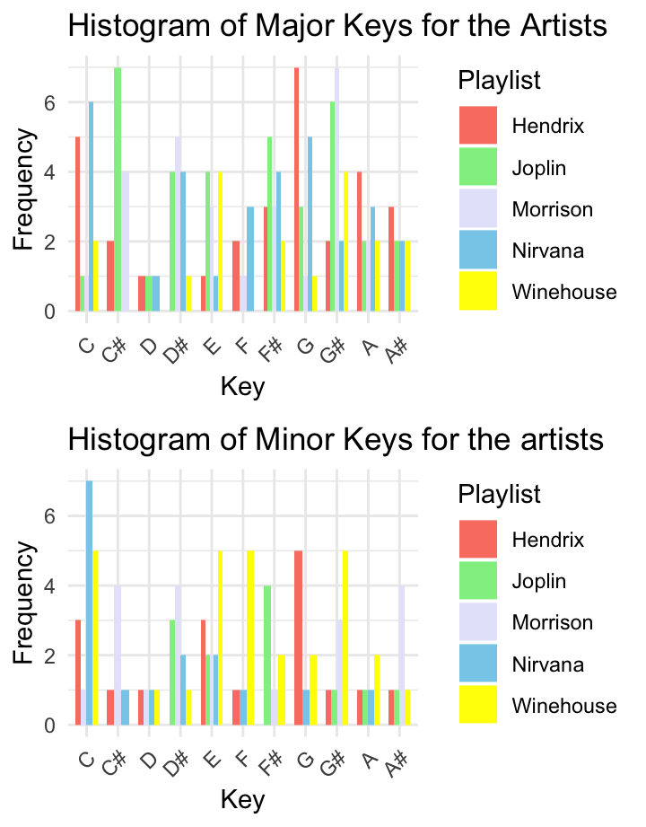
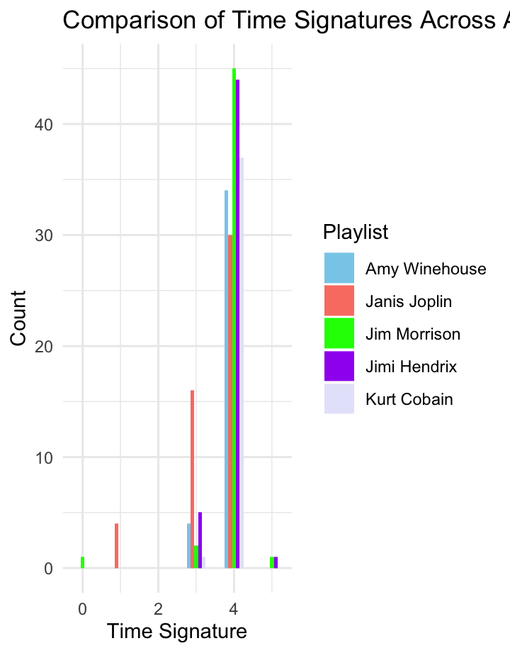
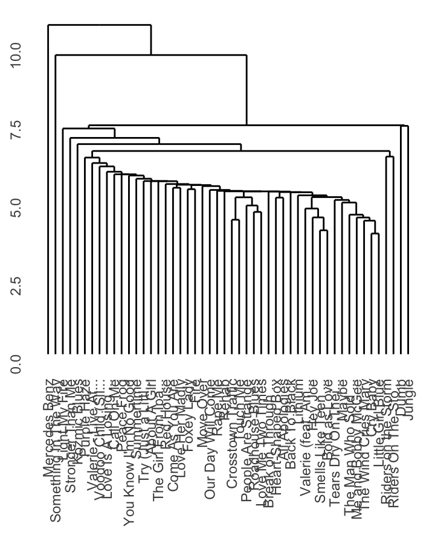
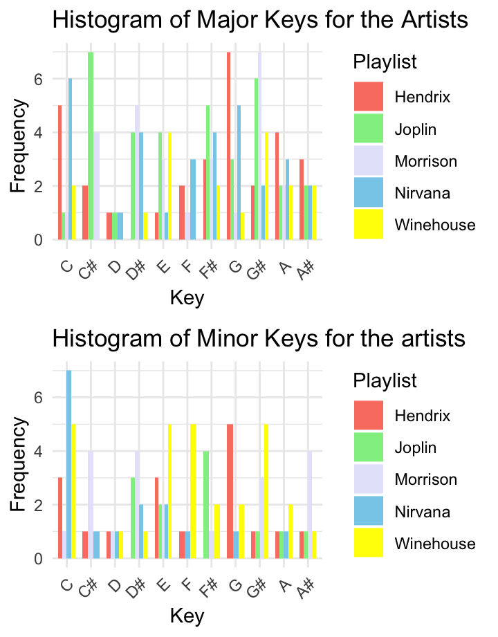
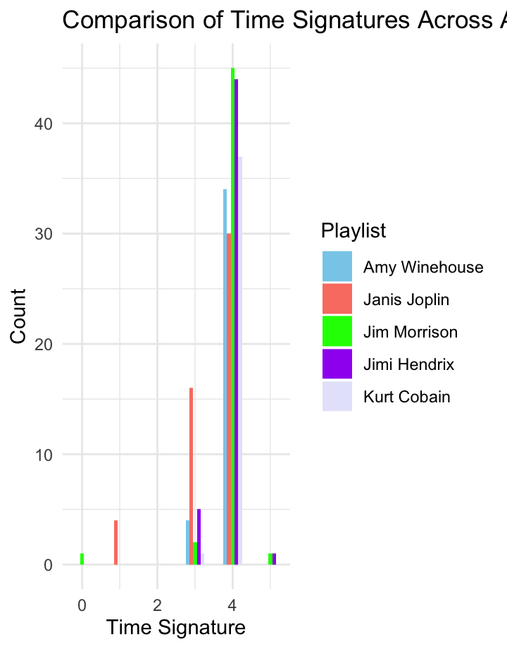
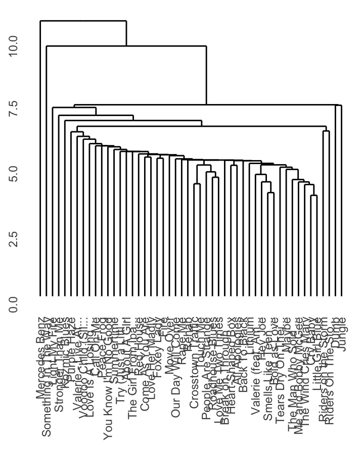
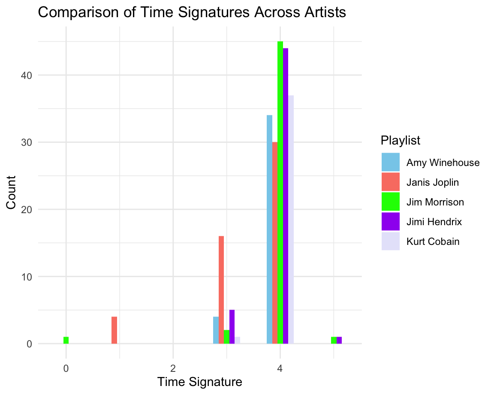
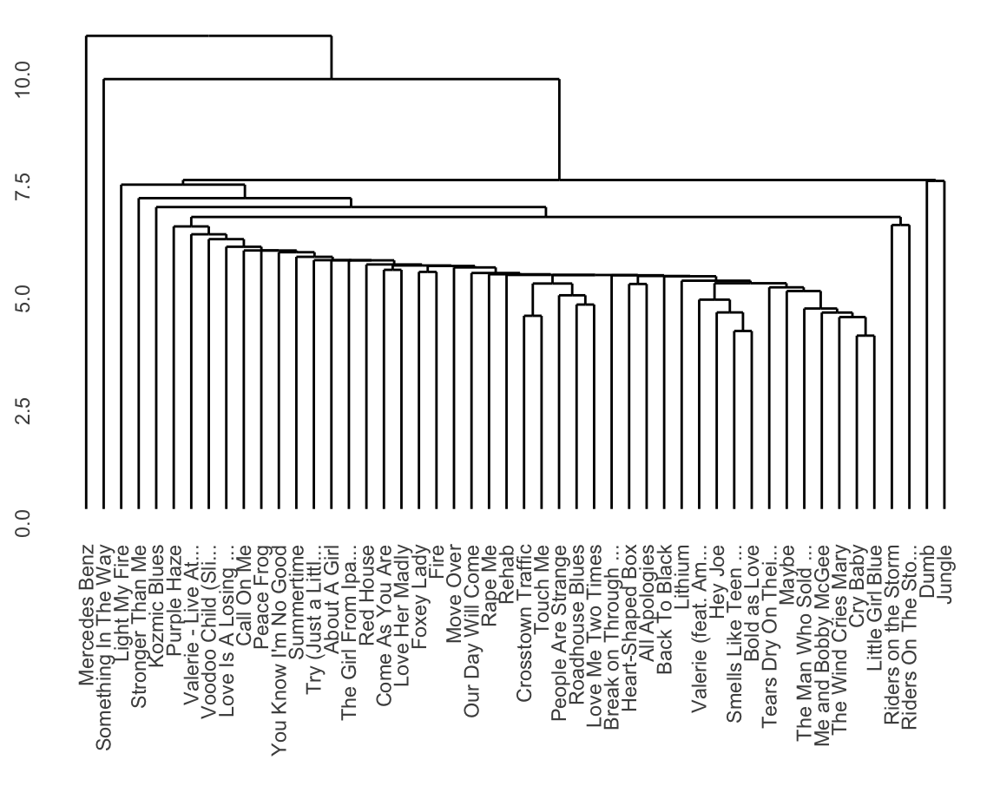

Introduction
Column
Introduction
My corpus focuses on the 27 Club, a collective of influential musicians whose lives tragically ended at the age of 27. This group includes iconic figures such as Jimi Hendrix, Janis Joplin, Jim Morrison, Kurt Cobain, and Amy Winehouse. I chose to analyse Spotify playlists dedicated to these artists to explore a diverse array of musical genres, from rock and blues to grunge and soul. My goal is to delve into their unique styles, lyrical content, and the cultural contexts of their times, aiming to uncover both the stark differences and surprising similarities in their music.
In my project, I intend to reflect on the personal struggles, artistic visions, and societal issues these artists addressed through their music. By focusing on audio features like energy, valence, tempo, danceability, and acousticness extracted from Spotify, I aim to dissect the emotional and energetic dimensions of their tracks. A significant part of my analysis involves examining how musical modes (Major vs.Minor) correlate with the mood and intensity of their music, offering insights into the emotional depth conveyed.
Ive highlighted the importance of understanding each artists stylistic evolution, the thematic continuity across varied genres, and the profound emotional resonance in their music. Including both live performances and studio recordings in my analysis might provide deeper insights into their artistry and the raw emotions expressed in live settings.
This corpus is not just a tribute to the talents and legacies of these artists but also a comprehensive examination of their contributions to music and culture. Through detailed analysiscomparing energy and valence, exploring danceability versus acousticness, and examining the impact of musical modeI seek to offer a nuanced understanding of the 27 Club members enduring influence and the complex tapestry of themes that define their work.
For now i have used the This is .. playlists for each club member, so there are multiple songs. I still need to decide whether i am going to focus on certain songs of these artists (and which ones those will be).
Column
Overview of Genres
Overview of Energy x valence
Overview of Tempo x Danceability
Jimi Hendrix
About the Artist
Jimi Hendrix, born James Marshall Hendrix on November 27, 1942, in Seattle, Washington, remains one of the most influential and innovative guitarists in the history of popular music. His approach to the electric guitar was revolutionary and pioneering, expanding the instruments role beyond traditional rhythms and melodies to include feedback, distortion, and previously unexplored effects. Hendrixs technique, characterized by its fluidity, speed, and use of the wah-wah pedal, transformed the sound of rock and roll and inspired countless musicians across various genres.
Hendrixs musical career, though meteoric and brief, left an indelible mark on the music world. He rose to fame in the United States after his performance at the Monterey Pop Festival in 1967, where his audacious guitar playing and dramatic stage anticssuch as setting his guitar on firecemented his status as a guitar icon. This followed his success in the United Kingdom with the Jimi Hendrix Experience, a trio that produced seminal albums like Are You Experienced, Axis: Bold as Love, and Electric Ladyland.
Hendrixs music was a fusion of blues, rock, R&B, and jazz, showcasing his exceptional talent not only as a guitarist but also as a songwriter and vocalist. His most famous songs, such as Purple Haze, Foxy Lady, The Wind Cries Mary, and his rendition of The Star-Spangled Banner at Woodstock in 1969, exemplify his innovative use of the guitar and his profound impact on the sound of contemporary music.
Tragically, Jimi Hendrixs life and career were cut short when he died on September 18, 1970, at the age of 27, joining the infamous 27 Club of music and cultural figures who died at that age. Despite his brief career, Hendrixs legacy endures. He is celebrated for his contributions to music, particularly his mastery of the electric guitar, which continues to inspire generations of musicians and fans alike. Hendrix was posthumously inducted into the Rock and Roll Hall of Fame in 1992, a testament to his enduring influence and significance in the world of music.
Listen here to Jimi Hendrix:
Chromagrams
The chromagram for All Along the Watchtower reveals a dense and continuous distribution of energy across a wide range of pitches. This suggests a complex texture and a full harmonic structure, which is characteristic of the rich instrumentation typically found in Jimi Hendrixs arrangements. The brighter areas indicate the parts of the track where certain notes are played with higher intensity, possibly during the songs iconic solos or the full-bodied chorus sections. The distribution of energy also reflects the songs dynamic progression, with peaks that likely correspond to the climactic points of the track.
In the Little Wing chromagram, the energy is distributed more sporadically, with clear bursts of brightness. These bursts correspond to moments where specific notes are struck with more force or emphasis, which align with the expressive, nuanced phrasing of Hendrixs guitar work. The song is known for its emotive guitar playing, and the chromagram captures the ebb and flow of this energy. The variation in color intensity suggests that Little Wing has a softer dynamic overall, but with moments of increased intensity that give the song its emotional impact.
The chromagram of Purple Haze is marked by areas of high intensity that are more evenly spread out in time, but with a particular concentration on specific pitches. These areas of intensity often represent the songs driving riffs and the anchoring motifs that Hendrix repeats with variations throughout the track. The songs aggressive and upfront style is reflected in the sustained levels of energy in these pitch classes, and the less intense areas likely represent the more subdued vocal sections or breaks between the riffs.
General Observation:
Analyzing the chromagrams of these three songs, we can draw out a common theme of dynamic range and expressiveness, attributes that define Hendrixs musical style. Each chromagram captures the signature fluctuations in intensity that Hendrix brought to his music, whether through his vigorous solos or the subtle nuances of his rhythm playing. The visualization through chromagrams highlights the intricate balance between melody and harmony in his work, showcasing how Hendrix manipulated pitch and dynamics to craft his unique sound. These graphical representations provide a window into the structural and emotional framework of his music, illustrating how Hendrixs approach to the guitar transcended traditional playing to create a rich, multisensory experience.
Self-Similarity Matrices
The Matrices

Kurt Cobain
About the Artist
Kurt Cobain, the lead singer, guitarist, and primary songwriter of Nirvana, remains one of the most iconic figures in the history of rock music. Born on February 20, 1967, in Aberdeen, Washington, Cobains influence extended far beyond his music, touching on the culture, fashion, and attitudes of an entire generation. Nirvana, formed in 1987, became the flagship band of Generation X and is credited with bringing grunge music to the mainstream with their seminal album, Nevermind, released in 1991.
Cobains songwriting was known for its raw emotion, powerful dynamics, and reflective lyrics that delved into personal pain, social alienation, and a disdain for the superficiality of society. Tracks like Smells Like Teen Spirit, Come as You Are, and Heart-Shaped Box showcased his ability to blend melodic sensibilities with the raw power of punk rock, creating anthems that resonated with a wide audience.
Despite achieving massive commercial success, Cobain was notoriously uncomfortable with fame. He struggled with the expectations placed upon him and was vocal about his issues with the music industry, media, and the misinterpretation of his artistic vision. His personal life, marked by his battle with heroin addiction and his tumultuous relationship with Courtney Love, was heavily scrutinized by the public and media.
Kurt Cobains life came to a tragic end on April 5, 1994, when he died by suicide at the age of 27. His death marked the end of an era and left a void in the music world that is felt to this day. Cobains influence on music and culture continues to be celebrated; he is remembered not only for his contributions to grunge and alternative rock but also for his impact on the ethos of a generation. Nirvanas music remains a powerful symbol of the 90s cultural landscape, embodying the spirit of disillusionment and the quest for authenticity in a commercialized world.
Listen here to Kurt Cobains Nirvana:
Chromagrams
The chromagram for Smells Like Teen Spirit shows a dense distribution of notes throughout the song, with frequent activity across the range of pitches. The most prominent pitches appear to be around E and F#, which are indicative of the songs key and main power chords. Theres a consistent pattern that repeats, reflecting the songs iconic guitar riff. The intensity of colors, particularly in the yellow and green spectrum, suggests a strong presence and repetition of these notes at a high magnitude, likely corresponding to the heavy, distorted guitar that is central to the songs sound. Throughout the timeline, theres a noticeable periodicity, corresponding to the songs structure of verses and choruses. The sections with less color could indicate quieter moments, possibly the clean sections of the guitar riff or breaks between the vocal phrases.
For Come As You Are, the chromagram shows a more concentrated distribution of notes with a particular emphasis on D and E. This aligns with the songs memorable bassline which plays a critical role throughout the track. The continuity of the colors suggests that the song has a steady rhythmic and melodic pattern that does not deviate much, indicative of the songs hypnotic and persistent quality. The colors are not as intense as in Smells Like Teen Spirit, which could suggest less distortion or dynamic variation in the track. The occasional spikes in magnitude, seen as brief bursts of yellow, could represent the songs chorus or more dynamically intense sections.
The chromagram for About A Girl shows a more varied and less dense distribution of notes. Theres a visible alternation between pitches, particularly around E, G, and A, which likely represents the songs main chord progression. The variation in color intensity suggests a dynamic play between softer and louder sections, which is characteristic of the songs verse-chorus structure. Theres also a visible periodicity, but with more variation than Come As You Are, implying a greater diversity in the songs sections. The less intense coloration compared to Smells Like Teen Spirit could again suggest a lower level of distortion or a more acoustic-driven sound.
Across all three Nirvana songs, there is a distinct pattern of repetition and a strong presence of specific pitches that define each songs key characteristics. The chromagrams reflect the bands grunge style, with Smells Like Teen Spirit showing the most intense and dense musical activity, which corresponds to its high-energy, distorted sound. Come As You Are presents a more hypnotic and consistent pattern, indicative of its more subdued yet persistent rhythm. About A Girl demonstrates dynamic range and a clearer delineation between song sections, suggesting a balance between softer verses and more powerful choruses. Each chromagram visually encapsulates the essence of the song it represents, displaying the distinctiveness of Nirvanas musical style, marked by memorable riffs, impactful dynamics, and a balance between intensity and melody.
Self-Similarity Matrices
The Matrices
Janis Joplin
About the Artist
Janis Lyn Joplin, born on January 19, 1943, in Port Arthur, Texas, remains one of the most powerful and influential figures in rock and roll history. Her raw, explosive vocal style blended elements of blues, rock, and soul, making her a pioneer of her time and earning her the title of the Queen of Psychedelic Soul. Joplins brief but meteoric career in the late 1960s reshaped the boundaries of music and performance for women in the rock genre, leaving an indelible mark that continues to inspire generations of musicians and fans alike.
Joplins journey to stardom began in her tumultuous teenage years, marked by feelings of alienation and an intense passion for blues music. This passion led her to the vibrant music scene of Austin, Texas, where she first performed folk and blues music. However, it wasnt until she moved to San Francisco and joined the psychedelic rock band Big Brother and the Holding Company that Joplins career truly took off. Their performance at the Monterey Pop Festival in 1967, highlighted by Joplins raw and emotionally charged rendition of Ball and Chain, catapulted her to national fame.
Following her time with Big Brother, Joplin pursued a solo career with her backing groups, first the Kozmic Blues Band and later the Full Tilt Boogie Band. Her first solo effort, I Got Dem Ol Kozmic Blues Again Mama! (1969), showcased a more soulful and bluesy sound. Yet, it was her posthumously released album, Pearl (1971), that solidified her legacy. Featuring hits like Me and Bobby McGee and Mercedes Benz, Pearl exhibited Joplins diverse range and depth as a vocalist and songwriter. Tragically, Joplin died of a heroin overdose at the age of 27, just a few weeks before Pearl was released.
Beyond her music, Janis Joplin is remembered for her distinctive style, her unabashed expression of emotion, and her refusal to conform to the expectations of women in the music industry and society at large. She was known for her flamboyant, psychedelic wardrobe, her raspy, soulful voice that seemed to carry the weight of her personal struggles, and her electrifying stage presence that captivated audiences.
Joplins influence extends beyond her musical output; she is seen as a symbol of the 1960s counterculture movement, a pioneer for women in music, and a figure who challenged the norms of her time. Despite her careers brevity, Joplins contributions to music were profound, earning her posthumous inductions into the Rock and Roll Hall of Fame and the Grammy Lifetime Achievement Award. Her spirit and songs continue to resonate, reminding us of the power of authenticity and the enduring appeal of raw, heartfelt music. Janis Joplins legacy is not just in the notes she sang but in the barriers she broke down, making the music world a richer, more inclusive place.
Listen here to Janis Joplin:
Chromagrams
The chromagram for Me and Bobby McGee shows a repeating pattern, which likely corresponds to the songs chorus and verses. The pitches seem to be concentrated around C, D, and E, with occasional activity in other pitches. This suggests a melody that revolves around these notes, which is common for a song with a strong vocal line. The yellow and green areas indicate sections of the song with higher intensity, possibly when the chorus kicks in or during a powerful vocal part. There is also a noticeable change in the pattern around the halfway mark, which might correspond to a bridge or an instrumental solo where the songs dynamics change.
For Piece of My Heart, the chromagram shows a dense and varied distribution of notes, with a lot of activity across the range of pitches. This song is known for its raw vocal power and emotional intensity, which could be reflected in the frequent changes in pitch and intensity. There are several spikes of high magnitude throughout the song, likely representing the powerful and emotive delivery that Janis Joplin is famous for. The key notes seem to be around E, F#, and G, which are consistently present throughout the track, suggesting these are central to the songs harmonic structure.
The chromagram for Cry Baby shows a somewhat less dense but still varied pattern of notes. The distribution of pitches is less consistent than in Piece of My Heart, with more sporadic bursts of color, especially in the yellow range. This could be indicative of Joplins dynamic vocal delivery, with sudden powerful outbursts. The pitches seem to focus around E and F#, with some activity around C and D as well. This may reflect a soulful melody that frequently moves between these notes. The less consistent pattern could also suggest a song with a significant amount of improvisation or variation in its vocal delivery.
The chromagrams of Janis Joplins songs illustrate the dynamic and soulful style of her music. The dense and varied distribution of notes along with the frequent spikes in magnitude reflect her powerful vocal performances and the emotional intensity of her songs. Each chromagram shows a different pattern, which correlates to the unique structure and delivery of each song. The chromagrams capture the essence of Joplins music, with its raw energy, emotive power, and the central role of her distinctive vocal style.
Self-Similarity Matrices
The Matrices
Amy Winehouse
About the Artist
Amy Winehouse was a British singer-songwriter known for her deep, expressive contralto vocals and her eclectic mix of musical genres including soul, rhythm and blues, jazz, and reggae. Winehouses music was a reflection of her personal experiences, and she was celebrated for her candid songwriting and powerful performances that often felt like a window into her soul.
Born on September 14, 1983, in London, Winehouse grew up in a family with a love for jazz music, which deeply influenced her artistic development. She attended the Sylvia Young Theatre School before transferring to the BRIT School for Performing Arts and Technology. Winehouses debut album, Frank (2003), was a critical success in the UK and was nominated for the Mercury Prize. The albums title was a nod to her admiration of Frank Sinatra and showcased her abilities not only as a vocalist but also as a songwriter.
However, it was her second album, Back to Black (2006), that catapulted her to international fame. The album, produced by Mark Ronson and Salaam Remi, fused soul, jazz, and blues, and was distinguished by its modern yet retro sound. Back to Black received widespread critical acclaim and earned Winehouse numerous awards, including five Grammy Awards, making her the first British woman to win five Grammys, including three of the General Field Big Four Grammy Awards: Best New Artist, Record of the Year and Song of the Year.
Winehouses music was notable for its emotional rawness and honesty. Her lyrics often dealt with her personal life, including her tumultuous relationships and struggles with substance abuse. Her signature song, Rehab, became emblematic of her challenges, with its catchy yet poignant refrain, They tried to make me go to rehab, I said, No, no, no.
Despite her commercial success, Winehouses life was marked by personal struggles. Her frequent battles with substance addiction and mental health issues were heavily publicized in the media, often overshadowing her musical achievements. Her distinctive style, featuring a beehive hairdo and winged eyeliner, made her a muse for fashion designers, but it was her unique voice and talent that left an indelible mark on the music industry.
Winehouses death on July 23, 2011, at the age of 27, was a tragic end to a career that was both influential and tumultuous. She became a member of the so-called 27 Club, a group of influential musicians who died at the same age. Her legacy, however, endures through her music, which continues to inspire a new generation of artists and music lovers who resonate with her authenticity, artistry, and the timeless quality of her voice and melodies.
Winehouses influence extended beyond music, with her life and career having been the subject of various documentaries and retrospectives that aim to understand the complexities of her life and the impact of her work. Her posthumous album, Lioness: Hidden Treasures (2011), offered a glimpse of her unreleased songs and demos, further solidifying her status as a talented artist taken too soon. Amy Winehouse remains a figure of fascination, remembered for her unmistakable voice, her lyrical genius, and her contribution to modern music.
Listen here to Amy Winehouse:
Chromagrams
The chromagram for Back to Black exhibits a pronounced concentration of energy in the lower pitch classes, which suggests a song that is anchored in a lower register, perhaps indicative of a bass line or lower-pitched chords that play a significant role in the songs harmonic structure. The relative consistency of energy across the track may point towards a minimalistic arrangement that does not vary greatly in terms of instrumentation or dynamics throughout the song. This could correlate with the songs somber mood and lyrical theme of mourning a lost relationship. The repeating patterns visible in the chromagram could be reflective of a recurring chord progression that is a hallmark of the songs structure, giving it a sense of cohesiveness and predictability that may resonate with the themes of retrospection and sorrow present in the lyrics.
In contrast, the chromagram for Valerie displays a broader distribution of energy across the pitch classes, hinting at a more complex harmonic composition. The patches of higher energy, represented by the warmer colors, intermittently spread across the chromagram, likely correspond to moments in the song where the instrumentation becomes fuller or the vocal delivery more intense, such as during the chorus or bridge. These moments of heightened energy could be capturing the dynamic nature of the song, which, while still deeply emotional, has an upbeat and soulful rhythm that makes it distinct from Back to Black. The variance in the pattern of energy not only suggests changes in the chord progression but also indicates the songs potential for a call-and-response style between the vocals and backing instruments, a common feature in the soul genre to which this song pays homage.
The chromagram for Rehab shows a concentrated band of energy in the mid to lower pitch classes with more distinct spikes in energy than Back to Black, which could reflect a strong backbeat or a prominent bass line that is characteristic of the songs rhythm and blues influence. The song has a defiant and gritty feel, mirrored in the energy fluctuations that could represent the songs bold brass sections and the rhythmic emphasis that drives the track. The variations in the energy pattern suggest a more complex musical structure than Back to Black, with potential key changes or varied instrumental sections that add to the songs vigorous and rebellious spirit. The chromagram captures the songs dynamic shifts, which echo the narrative of personal struggle and resistance in the face of external pressures, a central theme of the lyrics.
Looking across all three songs, its evident that Amy Winehouses music encompasses a range of emotional and harmonic complexity. The chromagrams reflect not only the differences in mood and thematic content between the songs but also the shared qualities that define her musical style. Each song has its own distinctive pattern of energy across the pitch classes, reflecting their unique chord progressions, melodic lines, and overall arrangements. These visual patterns underscore Winehouses ability to convey a wide array of emotions through her musicfrom the melancholy of Back to Black to the spirited soulfulness of Valerie, and the bold defiance of Rehab. The chromagrams, in essence, offer a visual counterpart to the auditory experience of Winehouses music, highlighting the depth and diversity of her songwriting and compositional skills. Her songs manage to weave intricate musical structures with emotionally charged performances, creating a lasting impact that is both visually and sonically apparent.
Self-Similarity Matrices
The Matrices
Jim Morrison
About the Artist
Jim Morrison, the enigmatic frontman of The Doors, was an iconic figure of the 1960s rock scene, known for his poetic lyrics, baritone voice, and wild personality. Born on December 8, 1943, in Melbourne, Florida, Morrison was not only a singer but also a poet, songwriter, and filmmaker. His charisma and onstage persona made him one of the most legendary and provocative figures in the history of rock music.
Morrison co-founded The Doors in 1965 in Los Angeles, California, with keyboardist Ray Manzarek, guitarist Robby Krieger, and drummer John Densmore. The bands name was inspired by Aldous Huxleys book The Doors of Perception, which in turn was a reference to a William Blake quotation: If the doors of perception were cleansed, everything would appear to man as it is, infinite.
The Doors quickly gained fame with hits like Light My Fire, Break On Through (To the Other Side), and The End, showcasing Morrisons deep, bellowing voice and poetic lyrics. The bands music was a fusion of rock, blues, and psychedelia, and it often explored themes of death, love, rebellion, and the human psyche. Morrisons songwriting was heavily influenced by literary figures such as Arthur Rimbaud, Friedrich Nietzsche, and Jack Kerouac, and he was known for often improvising spoken word passages during live performances.
Morrisons public image was marked by a series of tumultuous events, including on-stage arrests and his infamous indecency arrest in Miami, which solidified his status as a counterculture icon. His unpredictable behavior and substance abuse were a constant source of tension within the band and with law enforcement, contributing to his mystique as well as his eventual downfall.
Despite his troubled life, Morrisons impact on rock music and popular culture is undeniable. He was one of the earliest rock stars to embody the archetype of the tortured artist, grappling with existential angst and the burdens of fame. His lyrics and poetry are still studied for their depth and intensity, and The Doors music remains influential, covered and celebrated by artists across various genres.
Jim Morrison died in Paris on July 3, 1971, at the age of 27, under circumstances that remain somewhat mysterious, adding to the mythos surrounding his life and career. As with other members of the infamous 27 Club, his legacy has been romanticized and remains a subject of fascination, symbolizing the rebellion and excesses of rock and roll. Morrisons grave at Pre Lachaise Cemetery in Paris is a pilgrimage site for fans, and his spirit continues to captivate those who are drawn to his artistry and the era he came to define.
Listen here to Jim Morrisons The Doors:
Chromagrams
The chromagram for People Are Strange reveals a varied distribution of pitch classes with notable activity in the mid-range frequencies. The songs harmonic content appears to fluctuate, which may correspond to its distinctive melody and changes in harmonic progression. Theres a sense of unease and peculiarity, much like the songs title and lyrics suggest. The repeated patterns indicate a structured musical form but with enough variation to keep the listener engaged. The chromagram shows that the song does not rely heavily on the lower bass frequencies, which might be indicative of a lighter instrumentation or a focus on mid-range instruments like the guitar and the organ, consistent with the bands style.
Riders on the Storm presents a chromagram with a long duration, as it is a longer track, and displays a relatively consistent pattern of intensity across the pitch classes. This consistency might reflect the songs steady, driving beat that emulates the sound of a thunderstorm, which is a central theme of the track. The energy seems to be spread across both lower and higher pitch classes, suggesting a rich harmonic texture that includes both bass and melodic elements. The extended sections of similar coloration could indicate repetitive or hypnotic sections within the song, aligning with its atmospheric and immersive nature. Theres a sense of a journey, both musically and lyrically, which is captured in the sustained energy throughout the piece.
For Break on Through (To the Other Side), the chromagram shows a high concentration of energy in certain pitch classes at various points throughout the song. These could be indicative of the songs iconic, punchy keyboard riffs and the strong, rhythmic bass lines that drive the track forward. The intense bursts of color suggest a more energetic and forceful composition, aligning with the songs theme of breaking free from constraints. The chromagram captures the essence of the songs dynamic shifts and the psychedelic rock influence with its sharp contrasts in harmonic content.
The chromagrams for The Doors songs illustrate the bands diverse musical approach, with each track offering a different array of harmonic complexities and emotional tones. People Are Strange shows the bands ability to weave an air of mystery and introspection into their music, Riders on the Storm captures a more meditative and immersive experience, and Break on Through (To the Other Side) reflects the energy and rebellious spirit of the band. The chromatic visualization of these songs underscores The Doors skill in balancing repetitive, hypnotic elements with varied and intense musical moments to create songs that are both catchy and deeply evocative. Each songs chromagram, therefore, provides a visual map of its musical journey, showcasing the distinct and rich tapestry of sounds that define The Doors enduring legacy in rock music.
Self-Similarity Matrices
The Matrices
Playlist Comparison
Playlist Comparison
Time Signature in different playlists
Time Signature in different playlists
 ***
I wanted to see if there are big differences in time signatures within both genres.
Heatmap
Heatmap

it is fun to see the dendogram, that for instance Smells Like Teen Spirit by Nirvana, is really similar to Valerie by Amy Winehouse. When listening to both these songs this does not really come to mind. Conclusion ========================== ### Conclusion this will be a conclusion
This will be my conclusion